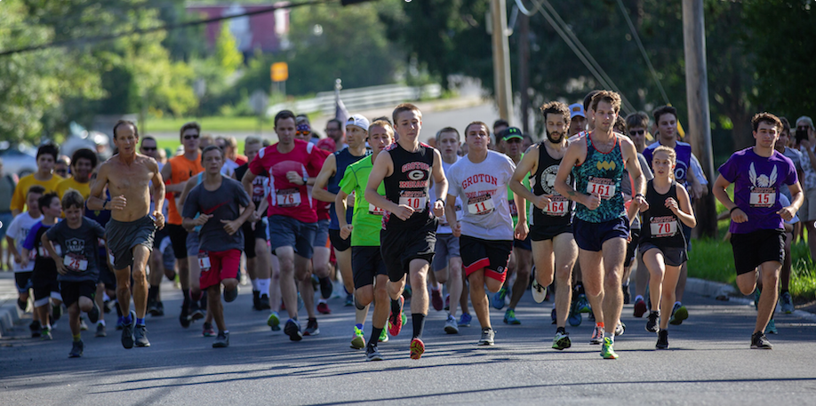

This race is sponsored by, and is a fund raiser for the
Groton Varsity Cross Country Program. All proceeds benefit the Girls' and Boys'
Cross Country Teams. Every year's proceeds have helped fund trips to other
competitions and to purchase team apparel.
Course:
The course follows village streets (2.5 miles), an old railroad
bed (0.5 miles), and finishes on the high school track. Some flat terrain,
with a few steady inclines and declines, and one short, steep hill just
before the one mile mark.
Interactive map and more route information at:
http://www.usatf.org/routes/view.asp?rID=12258
Triple Town Grand Prix Series
The Triple Town Grand Prix, which was first held in 2017, consists of three 5K races
on consecutive weekends - the Lansing Lighthouse 5K , the Dryden Run for the Pride , and the
Groton Labor Day 5K . Prizes are awarded after
the Groton Labor Day 5K.
Due to different distances being run during the 2019 Dryden Run for the Pride,
the final 2019 Triple Town Grand Prix Series standings are based on the combined times of the Lansing Lighthouse 5K
and Groton Labor Day 5K from among the competitors that completed all three races.
View 2019 Triple Town Grand Prix Series race photos
2019 Grand Prix Final Results - Female Name Dryden Lansing Groton Overall Age City Monica Moll ✓ 0:22:54 0:23:42 0:46:36 38 Ithaca Tonya Engst ✓ 0:24:39 0:25:19 0:49:58 51 Ithaca Sophia Darling ✓ 0:24:31 0:25:39 0:50:10 44 Groton Vanessa Bell ✓ 0:30:21 0:24:53 0:55:14 13 Ithaca Samantha Nash ✓ 0:27:19 0:28:17 0:55:36 24 Groton Judith Drake ✓ 0:27:53 0:30:15 0:58:08 50 Groton Cathy Hall ✓ 0:30:54 0:33:13 1:04:07 59 Moravia Shantel Hays ✓ 0:30:51 0:34:31 1:05:22 27 Groton Deanna Kilanowski ✓ 0:36:27 0:39:21 1:15:48 25 McGraw 2019 Grand Prix Final Results - Male Name Dryden Lansing Groton Overall Age City Drew Jackson ✓ 0:19:20 0:19:43 0:39:03 17 Groton Robert Brehm ✓ 0:20:01 0:19:48 0:39:49 17 Groton Keith Eggleston ✓ 0:19:45 0:20:21 0:40:06 59 Groton Andrew Roth ✓ 0:20:08 0:21:39 0:41:47 25 Groton Brennan Brockway ✓ 0:20:52 0:21:37 0:42:29 15 Groton Dylan Sedorus ✓ 0:22:17 0:23:26 0:45:43 14 Groton William Munson ✓ 0:24:00 0:24:31 0:48:31 55 Locke Bryan Gorges ✓ 0:24:54 0:25:42 0:50:36 34 Groton Cameron Brehm ✓ 0:25:19 0:26:06 0:51:25 16 Groton Lucius Dann ✓ 0:26:07 0:26:10 0:52:17 13 Lansing Lane Darling ✓ 0:29:13 0:32:10 1:01:23 10 Groton Daniel Wakeman ✓ 0:35:28 0:34:07 1:09:35 52 Dryden Lucas Darling ✓ 0:35:44 0:34:26 1:10:10 13 Groton Tristin Weeks ✓ 0:29:18 0:41:55 1:11:13 11 Groton
Show 2018 Final Results
2018 Grand Prix Final Results - Male Name Age Lansing Dryden Groton Overall Mikhail Kern 27 17:15 17:43 17:29 00:52:27 Robert Brehm 16 20:01 19:45 19:22 00:59:08 Robert Brotherton 17 19:16 19:55 21:44 01:00:55 Simon Moll 38 20:56 21:36 20:19 01:02:51 Andrew Roth 24 20:52 21:31 21:37 01:04:00 Kevin Justian 47 20:25 22:06 21:47 01:04:18 Jared Justian 16 20:19 22:46 23:48 01:06:53 Jakob Greenwood 15 21:47 22:53 25:09 01:09:49 Jeffrey Cronk 50 22:41 24:37 23:36 01:10:54 Colin Morey 14 23:26 23:19 24:46 01:11:31 Lance Cole 51 26:46 28:22 28:26 01:23:34 Christopher Pollock 43 36:01 31:09 31:52 01:39:02 Lucas Darling 12 31:34 37:41 36:01 01:45:16 2018 Grand Prix Final Results - Female Name Age Lansing Dryden Groton Overall Emily Miller 16 19:47 20:37 20:54 01:01:18 Zoe Barclay 16 22:47 24:05 23:17 01:10:09 Tonya Engst 50 24:21 26:07 24:45 01:15:13 Sophia Darling 43 24:57 25:48 26:32 01:17:17 Jasmine Garrow 14 31:11 34:54 31:29 01:37:34
Show 2017 Final Results
2017 Grand Prix Results - Male Name Lansing Dryden Groton Overall Age City Richard Moore 18:07 17:27 17:43 0:53:17 18 Groton Keith Eggleston 18:54 20:10 19:28 0:58:32 57 Groton Robert Brotherton 19:15 19:46 22:09 1:01:10 16 Groton Justin Scheidweiler 21:18 21:19 21:29 1:04:06 16 Freeville Andrew Roth 21:03 21:24 21:49 1:04:16 23 Groton Miles Couch 21:51 21:47 21:50 1:05:28 14 Dryden Griffin Scarlata 20:59 23:38 23:10 1:07:47 17 Groton Jeffrey Cronk 22:54 24:41 23:21 1:10:56 49 Groton James Miner 23:58 25:58 25:24 1:15:20 68 Dryden Colin Morey 26:14 27:02 26:41 1:19:57 13 Groton McCurdy Charlie 34:14 38:33 39:15 1:52:02 12 Trumansburg 2017 Grand Prix Results - Female Name Lansing Dryden Groton Overall Age City Emily Miller 21:45 21:50 21:44 1:05:19 15 Freeville Zoe Barclay 26:45 26:46 24:59 1:18:30 15 Groton Amy Gardner 25:23 26:50 26:39 1:18:52 16 Dryden Anne Snedaker 31:51 36:50 32:03 1:40:44 66 Ovid Addy Whitener 34:03 49:29 29:57 1:53:29 15 Dryden Mary Guthrie 38:41 42:46 39:56 2:01:23 53 Trumansburg